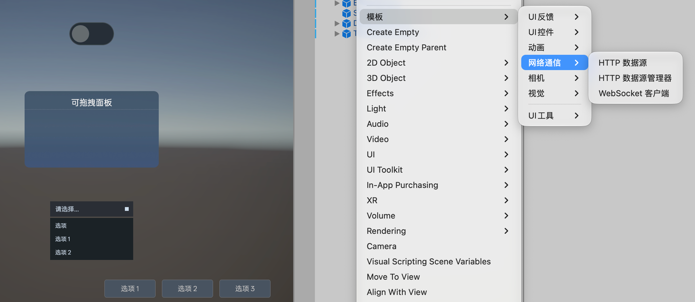
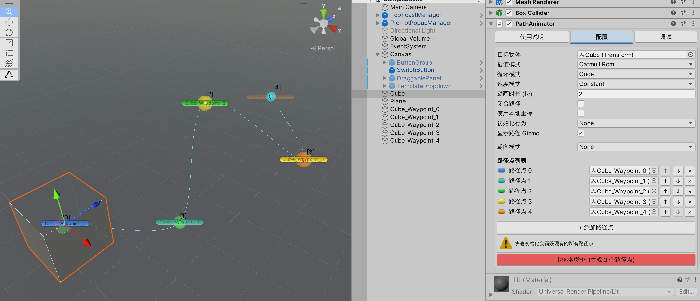
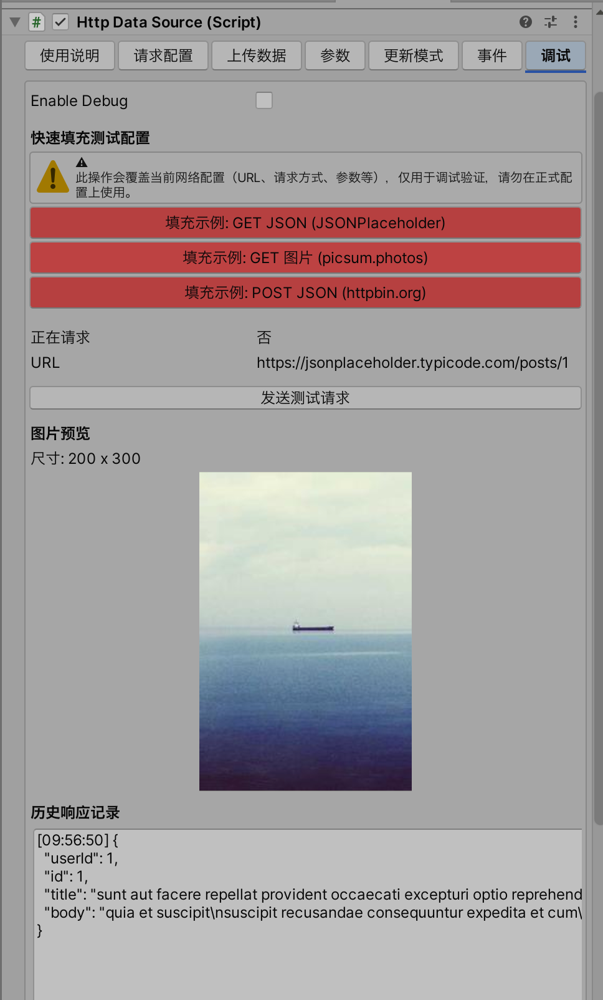
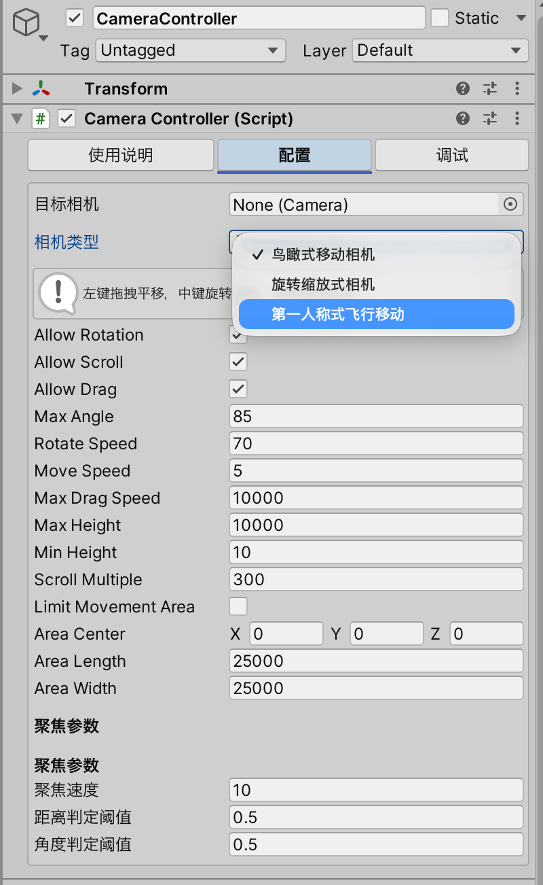

TemplateKit
Unity 编辑器模板工具包
右键 Hierarchy 面板即可创建预配置组件，省去从零搭建的时间。




动画
位移旋转缩放动画、路径动画、帧动画
相机
鸟瞰、旋转缩放、第一人称三种模式
网络通信
HTTP 请求、WebSocket 长连接
UI 反馈
弹窗确认、顶部 Toast 通知
UI 控件
按钮组、开关、拖拽面板、UI 跟随
视觉效果
Metaball 加载动画等 GPU 特效
生成预制体资源
部分模块还支持通过 Tools 菜单批量生成预制体到项目中：
菜单栏 > Tools > 模板 > 生成[模块名]预制体资源动画模块
无需 Animator Controller，用更简单的方式驱动动画
模块包含
- 简易动画器 — 在两个状态之间做 Transform 或 Image 填充动画
- 路径动画器 — 让物体沿路径点序列移动
- 帧动画控制器 — 控制 Legacy Animation 组件的播放帧段
创建方式
右键 Hierarchy > GameObject > 模板 > 动画 > [选择组件]简易动画器
SimpleAnimator — 两点之间的补间动画
它能做什么
在「起点状态」和「终点状态」之间做平滑过渡动画。支持两种模式：
- Transform 模式 — 位移、旋转、缩放（包括 RectTransform 的 anchoredPosition、sizeDelta 等）
- ImageFill 模式 — 控制 Image 的 fillAmount（进度条、冷却环等）
使用步骤
右键创建：GameObject > 模板 > 动画 > 简易动画器 (位移旋转缩放)
或选择 简易动画器 (图片填充) 进入 ImageFill 模式。
在 Inspector 中点击 QuickInit 按钮，会自动生成两个子物体作为标记：
- OriginMarker — 代表动画起点的 Transform 状态
- DisplayMarker — 代表动画终点的 Transform 状态
在 Scene 视图中移动 OriginMarker 和 DisplayMarker 到想要的位置/旋转/缩放。
运行时调用代码即可播放动画：
simpleAnimator.ToDisplay(); // 播放到终点状态
simpleAnimator.ToOrigin(); // 播放到起点状态
simpleAnimator.Toggle(); // 来回切换主要属性
| 属性 | 说明 |
|---|---|
| Mode | Transform 或 ImageFill |
| Duration | 动画时长（秒） |
| Use Local Space | 是否使用本地坐标（建议 UI 元素开启） |
| Rotation Mode | ShortestPath（最短路径）或 FullRotation（完整旋转） |
| Init Behaviour | 组件启用时自动定位到起点/终点/不处理 |
代码调用速查
// 获取引用
var anim = GetComponent<SimpleAnimator>();
// 基本播放
anim.ToDisplay(); // 到终点
anim.ToOrigin(); // 到起点
anim.Toggle(); // 自动判断方向
// 立即跳转（无动画）
anim.SetDisplayImmediate();
anim.SetOriginImmediate();
// 重复播放（来回 N 次）
anim.ToDisplay(3); // 到终点再回来，重复 3 次
// 停止
anim.KillAll();提示
如果项目中安装了 DOTween，组件会自动使用 DOTween 驱动动画，效果更流畅且支持缓动曲线。未安装则使用内置 Coroutine 方案。
路径动画器
PathAnimator — 沿路径点移动物体
它能做什么
让目标对象沿一组路径点平滑移动。适用于：巡逻路线、相机轨道、UI 引导动画、物体传送带等。
使用步骤
右键创建：GameObject > 模板 > 动画 > 路径动画器
在 Inspector 中点击 QuickInit，会自动生成 3 个路径点子物体。
在 Scene 视图中拖动路径点位置。需要更多点可点击 Add Waypoint。
路径会以 Gizmo 线条实时显示在 Scene 视图中。
运行时调用播放：
pathAnimator.PlayForward(); // 正向播放
pathAnimator.PlayReverse(); // 反向播放关键配置
| 属性 | 说明 |
|---|---|
| Interpolation | Linear（折线）或 CatmullRom（平滑曲线） |
| Loop Mode | Once / Loop / PingPong |
| Look At Mode | 移动时朝向：无 / 前进方向 / 固定目标 / 下一个路径点 |
| Duration | 走完全程的时间（秒） |
| Close Path | 是否闭合路径（最后一点连回第一点） |
| Speed Mode | Constant（匀速）或 UniformSegment（每段等时间） |
代码调用速查
var path = GetComponent<PathAnimator>();
path.PlayForward();
path.PlayReverse();
path.Pause();
path.Resume();
path.Stop();
path.StopAndReset(); // 停止并回到第一个点
// 直接跳到某个点
path.SnapToPoint(2); // 跳到第 3 个路径点
path.SnapToProgress(0.5f); // 跳到路径 50% 位置
// 只计算位置（不移动物体）
Vector3 pos = path.EvaluatePathAtProgress(0.75f);帧动画控制器
LegacyAnimationController — 精确控制 Legacy Animation 的播放帧段
它能做什么
对挂载了 Legacy Animation 组件的物体，按「起始帧 ~ 结束帧」精确播放动画片段。适用于：机械运动、开关门、设备状态切换等需要帧级控制的场景。
使用步骤
右键创建：GameObject > 模板 > 动画 > 帧动画控制器
确保目标物体上有 Animation（Legacy）组件并挂载了动画片段。
在 Inspector 中点击 QuickInit，自动读取所有可用的动画片段到列表中。
设置每个片段的 startFrame / endFrame / playbackSpeed。
代码调用速查
var ctrl = GetComponent<LegacyAnimationController>();
// 播放当前选中的片段（返回播放时长）
float duration = ctrl.Play();
// 播放指定片段并自定义帧范围
ctrl.Play("Open", startFrame: 0, endFrame: 30, speed: 1.5f);
// 跳到某一帧
ctrl.SnapToFrame(15);
ctrl.SnapToStartFrame();
ctrl.SnapToEndFrame();
// 暂停 / 恢复
ctrl.Pause();
ctrl.Resume();相机模块
三种相机控制模式，覆盖大部分 3D 场景需求
内置三种模式
- 鸟瞰式移动相机 — 俯视角拖拽平移 + 滚轮调高度，适合地图/沙盘类
- 旋转缩放式相机 — 围绕目标旋转 + 缩放，适合展示/查看模型
- 第一人称飞行移动 — WASD + 鼠标，适合场景漫游
三种模式通过 CameraController 统一管理，运行时可随时切换。
创建方式
右键 Hierarchy > GameObject > 模板 > 相机 > 相机控制器创建后在 Inspector 的 Camera Type 下拉框选择模式。
相机控制器
CameraController — 核心组件，管理相机状态切换
使用步骤
创建后它会自动查找场景中的 Main Camera。也可手动拖拽指定 Target Camera。
选择 Camera Type：鸟瞰式 / 旋转缩放式 / 第一人称飞行。
展开对应模式的折叠栏，配置速度、范围等参数。
鸟瞰式相机参数
| 属性 | 说明 |
|---|---|
| Move Speed | 拖拽平移速度 |
| Rotate Speed | 右键旋转速度 |
| Min/Max Height | 滚轮缩放的高度范围 |
| Limit Movement Area | 是否限制平移范围（开启后可设置中心点和宽高） |
旋转缩放式相机参数
| 属性 | 说明 |
|---|---|
| Target | 围绕旋转的目标物体 |
| Zoom Min/Max | 缩放距离范围 |
| Drag Sensitivity | 鼠标拖拽灵敏度 (X/Y) |
| Inertia | 松手后的惯性滑动时间 |
| Pitch Limit | 俯仰角限制范围 |
第一人称飞行参数
| 属性 | 说明 |
|---|---|
| Speed | WASD 移动速度（运行时可按 +/- 调整） |
| Rotation Speed | 鼠标旋转速度 |
| Enable Collision | 是否启用物理碰撞（开启会自动添加 Rigidbody） |
| E/Q Up Down Speed | 上下移动速度 |
| Min/Max Height | 高度限制（Enable Min Max Height 开启时生效） |
代码切换模式
// 获取单例
var cam = CameraController.Instance;
// 切换模式
cam.SetCameraType(CameraController.CameraTypeEnum.旋转缩放式相机);
// 聚焦到某个物体
cam.DoFocus(targetTransform, relativeEulers, relativePosition);目标切换器
CameraZoomController — 在预设目标之间切换相机视角
它能做什么
预设多个「关注点」，运行时可一键切换相机到对应位置和角度。适用于：楼层切换、展品聚焦、场景导览等。
使用步骤
创建：GameObject > 模板 > 相机 > 相机目标切换器
在 Inspector 的 Informs 列表中添加目标配置：拖入目标 Transform、设置缩放距离和旋转角度。
代码调用切换：
CameraZoomController.Instance.SetCameraTarget("展品A");
// 围绕目标旋转（仅旋转缩放模式）
CameraZoomController.Instance.RotateAroundTarget("展品A", cycleDuration: 5f);视口偏移控制器
CameraViewportController — 画面焦点左右偏移
它能做什么
当侧边面板展开时，通过偏移相机镜头让主画面焦点不被遮挡。效果类似地图应用打开详情面板时画面中心的偏移。
代码调用
var vpc = CameraViewportController.Instance;
vpc.SetToLeft(); // 画面偏左（焦点让给右侧面板）
vpc.SetToRight(); // 画面偏右
vpc.SetToOri(); // 回到居中网络通信模块
HTTP 请求和 WebSocket 长连接的开箱即用方案
模块包含
- HTTP 数据源 — 单个 HTTP 请求组件，支持 GET/POST/PUT/DELETE
- HTTP 数据源管理器 — 统一管理多个 API 接口，自带对象池和缓存
- WebSocket 客户端 — 长连接，自动重连 + 心跳
HTTP 数据源
HttpDataSource — 直接在 Inspector 中配置 HTTP 请求
它能做什么
不写代码也能发 HTTP 请求。URL、方法、参数、Header 全部在 Inspector 中配置，通过 UnityEvent 拿到响应结果。
使用步骤
创建：GameObject > 模板 > 网络通信 > HTTP 数据源
在 Inspector 中配置：
- 填写 URL
- 选择 HTTP 方法（GET / POST / PUT / DELETE）
- 如果是 POST，设置 Upload Type 和请求体内容
- 如需要，添加 Form Parameters 和 Headers
绑定响应事件（Inspector 底部的 UnityEvent）：
- OnResponseReceived — 请求成功时触发，参数为 JSON 字符串
- OnErrorReceived — 请求失败时触发
- OnImageReceived — 如果开启了 Expect Image Response，图片下载完成时触发
选择触发方式（Update Mode）：
- Manual — 手动调用 SendRequest()
- OnEnable — 组件启用时自动发送
- TimeInterval — 每隔 N 秒自动发送
- EndlessLoop — 收到响应后立即发送下一次
代码调用
var http = GetComponent<HttpDataSource>();
// 手动发送
http.SendRequest();
// 带回调
http.SendRequest(response => {
Debug.Log("收到: " + response);
});
// 动态修改参数
http.Url = "https://api.example.com/data";
http.SetUploadString("{\"key\":\"value\"}");
http.AddFormParameter("page", "1");关于鉴权
如果请求需要 Token，在同一物体或父物体上挂载 BearerTokenProvider 组件，填入 Token 即可自动添加 Authorization Header。
数据源管理器
HttpDataSourceManager — 多接口统一管理 + 对象池 + 缓存
它能做什么
当项目有多个 API 接口时，用管理器统一配置 Base URL 和各接口路径，自动管理对象池（避免创建大量 HTTP 组件）和响应缓存（避免重复请求）。
代码调用
var mgr = GetComponent<HttpDataSourceManager>();
// 发送请求（key 对应 Inspector 中配置的接口名）
mgr.Request("getUserInfo", parameters, response => {
Debug.Log(response);
});
// 泛型版本，自动反序列化
mgr.Request<UserInfo>("getUserInfo", parameters, user => {
Debug.Log(user.name);
});
// 清除缓存
mgr.ClearCache("getUserInfo");WebSocket 客户端
WebSocketClient — 长连接通信，自动重连和心跳
它能做什么
建立 WebSocket 长连接，支持自动重连、心跳 Ping、消息收发。同时兼容 Native 平台和 WebGL 平台。
使用步骤
创建：GameObject > 模板 > 网络通信 > WebSocket 客户端
填写 WebSocket URL（ws:// 或 wss://）。
配置重连和心跳参数（通常保持默认即可）。
绑定事件：onConnected、onTextReceived、onError、onDisconnected。
关键配置
| 属性 | 说明 |
|---|---|
| Connect On Enable | 组件启用时自动连接 |
| Enable Reconnect | 断线后自动重连 |
| Reconnect Delay | 重连间隔秒数 |
| Max Reconnect Attempts | 最大重连次数（-1 = 无限） |
| Enable Ping | 定时发送心跳 |
| Ping Interval | 心跳间隔秒数 |
代码调用
var ws = GetComponent<WebSocketClient>();
ws.Connect(); // 手动连接
ws.SendText("{\"cmd\":\"hello\"}");
ws.Disconnect();
// 事件监听（代码方式）
ws.OnTextReceivedDelegate += msg => Debug.Log(msg);
ws.OnConnectedDelegate += () => Debug.Log("已连接");UI 反馈模块
弹窗确认和顶部 Toast 通知
提供两种常见的 UI 反馈方式，使用前需要先通过 Tools 菜单生成预制体资源：
菜单栏 > Tools > 模板 > 生成UI反馈预制体资源然后通过右键菜单创建管理器到场景中。
提示弹窗
PromptPopupManager — 确认/取消弹窗
它能做什么
显示一个标准的确认弹窗（标题 + 描述 + 确认/取消按钮），用于危险操作确认、信息提示等。支持对象池，不会重复创建。
使用步骤
先生成预制体：Tools > 模板 > 生成UI反馈预制体资源
创建管理器：GameObject > 模板 > UI反馈 > 提示弹窗管理器
确保场景中有 Canvas。管理器会自动查找 Canvas 作为弹窗父级。
代码调用显示弹窗：
PromptPopupManager.Instance.ShowPrompt(
"删除确认",
"确定要删除这条记录吗？此操作不可撤销。",
onConfirm: () => { /* 确认逻辑 */ },
onCancel: () => { /* 取消逻辑 */ }
);顶部通知
TopToastManager — 从顶部滑入的消息通知
它能做什么
从屏幕顶部滑入一条通知消息，支持图标、自动消失、点击回调、队列管理。类似手机推送通知的效果。
使用步骤
先生成预制体：Tools > 模板 > 生成UI反馈预制体资源
创建管理器：GameObject > 模板 > UI反馈 > 顶部通知管理器
代码调用：
TopToastManager.Instance.ShowToast("文件保存成功");
// 带标题和图标类型
TopToastManager.Instance.ShowToast(
"网络连接已断开",
title: "系统提示",
iconType: TopToastManager.AlarmType
);
// 带点击回调
TopToastManager.Instance.ShowToast(
"收到新消息",
onClick: () => { OpenMessagePanel(); }
);
// 常驻通知（不自动消失）
TopToastManager.Instance.ShowToast("正在下载...", constant: true);内置图标类型
| 类型常量 | 用途 |
|---|---|
| TopToastManager.AlarmType | 警告/报警 |
| TopToastManager.OfflineType | 离线/断连 |
| TopToastManager.SuccessType | 成功 |
| TopToastManager.FailedType | 失败 |
| TopToastManager.NewUpdateType | 新更新/新消息 |
图标 Sprite 在 Inspector 的 Icon Presets 列表中配置。
UI 控件模块
常用交互控件的预制模板
生成预制体资源：
菜单栏 > Tools > 模板 > 生成UI控件预制体资源然后通过右键菜单创建到场景中使用。
按钮组
ButtonGroup — 互斥选中的按钮组（类似 Tab 切换）
它能做什么
管理一组按钮的互斥选中状态，点击某个按钮时自动取消其他按钮的选中样式。适用于：Tab 标签页、底部导航栏、筛选选项等。
使用步骤
创建：GameObject > 模板 > UI控件 > 按钮组
在创建的 GameObject 下面放置多个带 Button 组件的子物体。
Inspector 中点击右键菜单 Initialize（或开启 Auto Initialize On Awake），自动扫描并填充按钮列表。
监听切换事件：在 Inspector 绑定 OnIndexChanged 事件，或代码监听。
代码调用
var group = GetComponent<ButtonGroup>();
// 设置选中索引
group.SetIndex(2);
// 监听切换
group.OnIndexChanged.AddListener(index => {
Debug.Log("选中了第 " + index + " 个按钮");
});开关按钮
SwitchButton — 开/关两种状态的切换按钮
它能做什么
点击在 On/Off 两种状态间切换，自动更换 Sprite 和颜色。适用于：设置开关、夜间模式切换等。
使用步骤
创建：GameObject > 模板 > UI控件 > 开关按钮
在 Inspector 中设置 On Sprite / Off Sprite 和 On Color / Off Color。
绑定事件：OnSwitchOn / OnSwitchOff / OnSwitchChanged。
代码调用
var sw = GetComponent<SwitchButton>();
sw.Toggle(); // 切换
sw.SetSwitchState(true); // 设为开启
bool isOn = sw.IsOn; // 读取状态
sw.OnSwitchChanged.AddListener(state => {
Debug.Log("开关状态: " + state);
});可拖拽面板
UIDragPanel — 可以拖拽移动的 UI 面板
它能做什么
让 UI 面板支持鼠标拖拽移动，并自动限制在指定区域内。拖拽时自动置顶层级。
配置
| 属性 | 说明 |
|---|---|
| Drag Area | 限制拖拽的区域（RectTransform），留空则不限制 |
| Reset Position On Enable | 每次启用时回到初始位置 |
UI 跟随器
UIFollower — 让 UI 跟随 3D 世界中的物体
它能做什么
将 UI 元素（如血条、名称标签）锚定到 3D 世界中的某个 Transform，UI 会实时跟随其屏幕投影位置。物体移到相机背面时自动隐藏。
配置
| 属性 | 说明 |
|---|---|
| World Target | 要跟随的 3D 物体 Transform |
| UI Element | 要移动的 UI RectTransform |
| Offset | 屏幕空间偏移量 (像素) |
| Update Interval | 更新频率（0 = 每帧更新） |
| Auto Hide When Behind Camera | 物体在相机后方时自动隐藏 UI |
代码调用
var follower = GetComponent<UIFollower>();
// 动态更换跟随目标
follower.WorldTarget = newTarget;
// 手动计算世界坐标到 Canvas 坐标
Vector2 pos = follower.WorldToCanvasPosition(worldPos);视觉效果模块
GPU 驱动的运行时视觉效果
使用自定义 Shader 实现的视觉效果组件，性能开销低。
圆点旋转加载
MetaballLoadingSpinner — Metaball 融合效果的 Loading 动画
它能做什么
渲染一组 Metaball（元球）旋转融合的加载动画。纯 GPU 计算，支持自定义颜色、数量、大小和发光效果。
使用步骤
创建：GameObject > 模板 > 视觉 > 圆点旋转加载
组件会自动创建一个 RawImage 子物体来渲染效果。
在 Inspector 中调整颜色、大小、速度等参数。
主要参数
| 属性 | 说明 |
|---|---|
| Ball Count | 圆球数量 (1-16) |
| Orbit Radius | 旋转轨道半径 |
| Ball Radius | 单个球的半径 |
| Rotation Speed | 旋转速度（度/秒） |
| Top/Bottom Color | 渐变色上/下 |
| Glow Color/Intensity | 外发光颜色和强度 |
| Threshold | Metaball 融合阈值（越小融合越明显） |
代码调用
var spinner = GetComponent<MetaballLoadingSpinner>();
spinner.Show(); // 显示
spinner.Hide(); // 隐藏